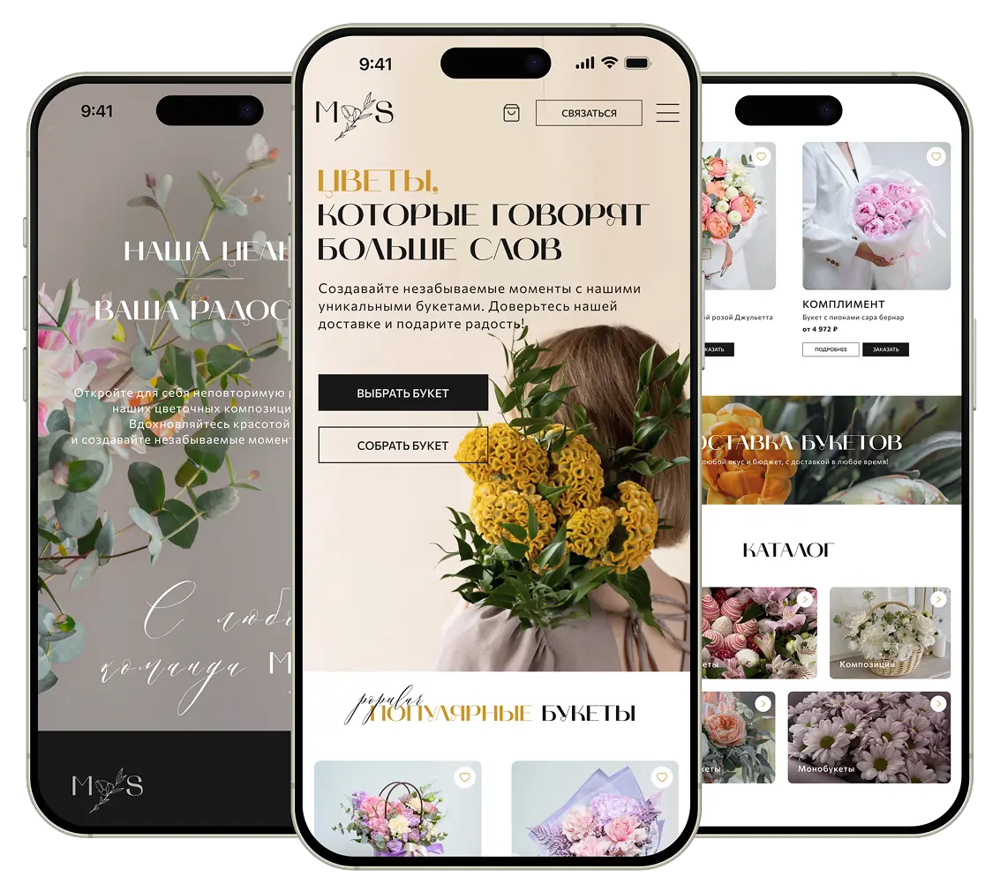
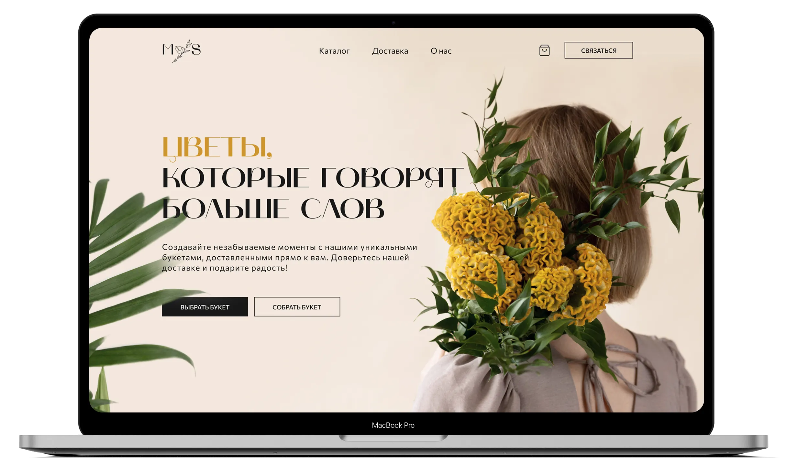
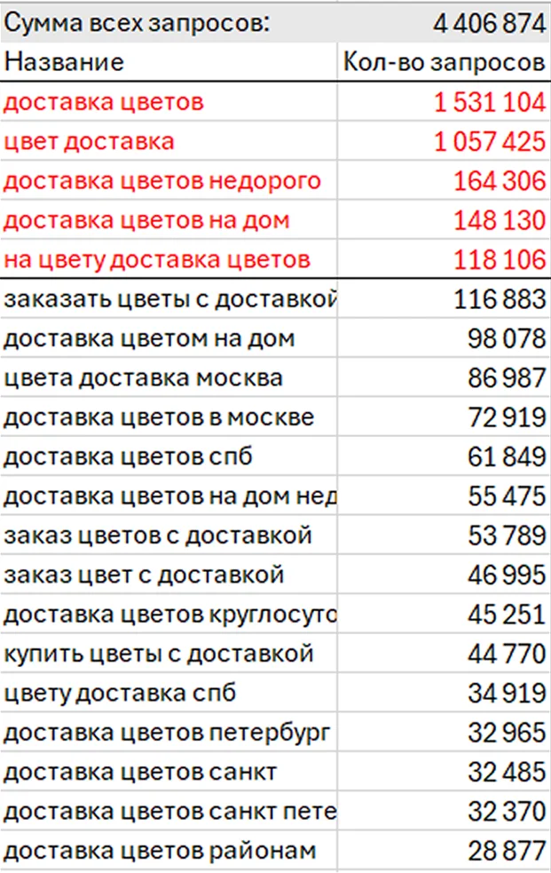
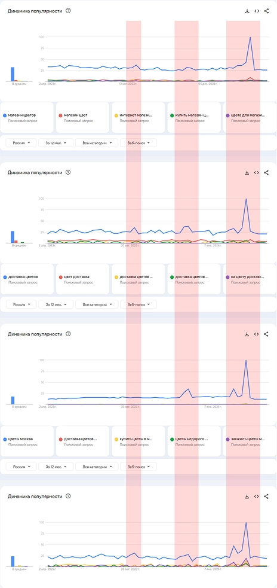

Личные проекты
Работа над личными проектами стала для меня способом системно развивать навыки в дизайне и применять их на практике. В разное время я обучался на бесплатных и платных онлайн-курсах, а также самостоятельно осваивал инструменты и приемы по обучающим материалам и видео из открытых источников. В рамках этих проектов я создавал обложки, сайты, презентации и инфографику, работая с разными форматами и задачами. Такой подход позволил мне не только расширить технические навыки, но и лучше понять принципы визуальной коммуникации и подачи информации.

ДПО от института
Обучение по программе дополнительного профессионального образования по направлению «Графический дизайн» стало для меня переходным этапом от работы с отдельными визуальными элементами к более системному проектированию. В рамках курса я изучал основы композиции и типографики, работал с графикой и анимацией, создавал иллюстрации в Adobe Illustrator и анимации в After Effects. Итогом обучения стал UX/UI-проект — разработка сайта интернет-магазина цветов, в котором были объединены аналитика, работа с пользовательскими сценариями и создание целостного интерфейсного решения.
процесс
В рамках заданий я учился выстраивать композицию и визуальную иерархию так, чтобы информация читалась последовательно и без перегрузки. Этот навык стал основой для работы с макетами, инфографикой и интерфейсами.
Работал с текстовыми блоками разного объема: от коротких заголовков до информационных экранов. Основной задачей было сделать текст читаемым и логично встроенным в структуру макета.
Создавал анимации в After Effects для учебных и проектных задач: переходы, акценты, простые сценарии движения. Работа с анимацией помогла лучше понимать тайминг, ритм и логику пользовательского внимания.
Использовал Adobe Illustrator для создания прикладной графики: иконок, схем и визуальных элементов для макетов и презентаций. Фокус был на функциональности и чистоте исполнения, а не на декоративности.
Разбирал интерфейсы и дизайн-решения существующих продуктов: структуру, подачу информации и пользовательские сценарии. Этот анализ использовался как основа для собственных проектных решений.
Итоговый UX/UI-проект
Итоговой работой на курсе стал UX/UI-проект сайта интернет-магазина цветов. Задача проекта заключалась не только в создании визуального макета, а в разработке обоснованного пользовательского решения, опирающегося на анализ, исследования и логику пользовательского поведения.



Анализ и актуальность
Работа над проектом началась с анализа поисковых запросов и актуальности темы, что позволило оценить интерес пользователей и определить контекст использования сервиса. Этот этап помог понять, какие задачи пользователей действительно хотят решать и какие сценарии наиболее востребованы.
Конкуренты и референсы
Следующим этапом стал анализ конкурентов и существующих решений на рынке. Я изучил структуру сайтов, подходы к каталогам и пользовательские пути, а также подбирал референсы с учётом актуальных визуальных и UX-трендов.